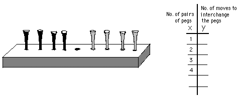

Ratan finds the equation of the inverse of the Peg Game rule
The Peg Game- the object of the game is to interchange the red pegs with the black pegs. Rules: 1.) You can move to an open space next to one, or 2.) you can jump, but only one peg of the other color, and 3.) you can't move backwards.

Ratan found the rule for the Peg Game to be x(x+2)=y or x2+2x=y and graphed this function (the black curve) and x=y (the orange line of symmetry, and the inverse, by interchanging the x-coordinates with the y-coordinates (the purple curve).
Ratan then solved the inverse equation for y in terms of x by completing the square, and checked 3 points on the graph below...
Fine work, Ratan!!